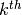
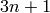

Sage имеет обширную функциональность в плане теории чисел. Например, можно производить арифметические операции в  :
:
sage: R = IntegerModRing(97)
sage: a = R(2) / R(3)
sage: a
33
sage: a.rational_reconstruction()
2/3
sage: b = R(47)
sage: b^20052005
50
sage: b.modulus()
97
sage: b.is_square()
True
Sage содержит большое количество теоретических функций. Например,
sage: gcd(515,2005)
5
sage: factor(2005)
5 * 401
sage: c = factorial(25); c
15511210043330985984000000
sage: [valuation(c,p) for p in prime_range(2,23)]
[22, 10, 6, 3, 2, 1, 1, 1]
sage: next_prime(2005)
2011
sage: previous_prime(2005)
2003
sage: divisors(28); sum(divisors(28)); 2*28
[1, 2, 4, 7, 14, 28]
56
56
Отлично!
Функция sigma(n,k) в Sage суммирует  степени делителей n:
sage: sigma(28,0); sigma(28,1); sigma(28,2)
6
56
1050
Далее покажем алгоритм Эвклида, функцию Эйлера  и китайскую теорему об остатках:
и китайскую теорему об остатках:
sage: d,u,v = xgcd(12,15)
sage: d == u*12 + v*15
True
sage: n = 2005
sage: inverse_mod(3,n)
1337
sage: 3 * 1337
4011
sage: prime_divisors(n)
[5, 401]
sage: phi = n*prod([1 - 1/p for p in prime_divisors(n)]); phi
1600
sage: euler_phi(n)
1600
sage: prime_to_m_part(n, 5)
401
Уясним кое-что для .
sage: n = 2005
sage: for i in range(1000):
... n = 3*odd_part(n) + 1
... if odd_part(n)==1:
... print i
... break
38
Китайская теорема об остатках:
sage: x = crt(2, 1, 3, 5); x
-4
sage: x % 3 # x mod 3 = 2
2
sage: x % 5 # x mod 5 = 1
1
sage: [binomial(13,m) for m in range(14)]
[1, 13, 78, 286, 715, 1287, 1716, 1716, 1287, 715, 286, 78, 13, 1]
sage: [binomial(13,m)%2 for m in range(14)]
[1, 1, 0, 0, 1, 1, 0, 0, 1, 1, 0, 0, 1, 1]
sage: [kronecker(m,13) for m in range(1,13)]
[1, -1, 1, 1, -1, -1, -1, -1, 1, 1, -1, 1]
sage: n = 10000; sum([moebius(m) for m in range(1,n)])
-23
sage: list(partitions(4))
[(1, 1, 1, 1), (1, 1, 2), (2, 2), (1, 3), (4,)]
 ¶
¶Поле чисел внедрено в Sage.
Обратите внимание: как только поле чисел
создано, его точность не может быть изменена.
sage: K = Qp(11); K
11-adic Field with capped relative precision 20
sage: a = K(211/17); a
4 + 4*11 + 11^2 + 7*11^3 + 9*11^5 + 5*11^6 + 4*11^7 + 8*11^8 + 7*11^9
+ 9*11^10 + 3*11^11 + 10*11^12 + 11^13 + 5*11^14 + 6*11^15 + 2*11^16
+ 3*11^17 + 11^18 + 7*11^19 + O(11^20)
sage: b = K(3211/11^2); b
10*11^-2 + 5*11^-1 + 4 + 2*11 + O(11^18)
Большое количество методов встроено для класса NumberField.
sage: R.<x> = PolynomialRing(QQ)
sage: K = NumberField(x^3 + x^2 - 2*x + 8, 'a')
sage: K.integral_basis()
[1, 1/2*a^2 + 1/2*a, a^2]
sage: K.galois_group(type="pari")
Galois group PARI group [6, -1, 2, "S3"] of degree 3 of the Number Field
in a with defining polynomial x^3 + x^2 - 2*x + 8
sage: K.polynomial_quotient_ring()
Univariate Quotient Polynomial Ring in a over Rational Field with modulus
x^3 + x^2 - 2*x + 8
sage: K.units()
[3*a^2 + 13*a + 13]
sage: K.discriminant()
-503
sage: K.class_group()
Class group of order 1 with structure of Number Field in a with
defining polynomial x^3 + x^2 - 2*x + 8
sage: K.class_number()
1